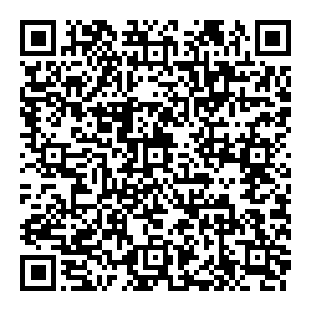
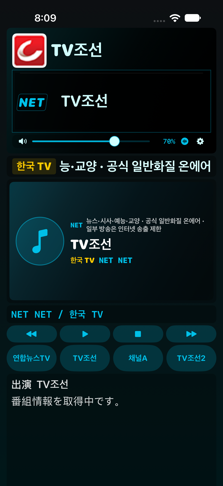

95번 수정: 채널A에서 소리만 나오던 영상 표시 오류를 수정했습니다. 해상도 정보가 비어 있어도 실제 영상 프레임이 출력되면 화면을 표시합니다. 기존 배치·세그먼트·음량 보정은 유지합니다.
한국 TV 21개는 PC에서 영상·음성 디코딩을 확인했습니다. iOS 27 시뮬레이터에서는 채널A 포함 9개를 확인했고, 나머지 12개는 검사 서버의 주소 추출 실패로 iOS 검증을 완료하지 못했습니다. 실제 아이폰 확인이 필요합니다.
실기기 확인용 시험 빌드

iOS 17.0 이상. SideStore에서 서명해 설치합니다. 기존 앱을 삭제하지 않고 같은 Apple 계정으로 업데이트하세요.
안드로이드 NET49 기준으로 일본 라디오·한국 라디오·NHK-NET·일본 TV·한국 TV의 5개 분류를 반영했습니다. NHK-NET 25개, 일본 TV 16개, 한국 TV 21개이며 선택 채널·프리셋·즐겨찾기를 분리하고 기존 저장값과 알람 방송을 이관합니다. 최신 공식 생방송 주소, 앨범 이미지 검증, Bluetooth 곡 정보 갱신, 재접속 주소 캐시와 자동 버퍼 조절도 포함합니다.
기존 아이폰 배치·세그먼트·게인 계산과 Build 92의 잡음 수정은 유지합니다. 일본 라디오와 기존 NAS 네이티브 형식의 재생 경로는 그대로입니다. 추가 NAS 형식은 최대 512 MiB 파일을 먼저 내려받아 재생합니다.

실제 iPhone 시뮬레이터 캡처입니다. 방송 편성 내용은 촬영 시각에 따라 달라집니다.
검증 범위: 카탈로그·편성표·게인·가사·이미지 검증, iOS 27 시뮬레이터와 네이티브 재생 테스트. 사용 중인 iOS 27 실기기에서의 소리·Bluetooth·NAS 서버·SideStore 설치는 별도 확인이 필요합니다. Android 전용 루팅·하드웨어 키·강제 음량·자동 실행·개인용 APK 수신/설치 기능은 포함하지 않습니다. Android Media3와 iOS 디코더의 시작 지연은 동일하지 않을 수 있습니다.
서울극동방송(106.9)은 국내 PC에서 공식 음원 수신을 확인했지만 미국 빌드 서버에서는 포트 연결이 시간 초과돼 라이브 검증을 하지 못했습니다. 국내 수신 음원 조각의 iOS 디코딩 검사와 라이브 접속 검사를 구분합니다. 아이폰에서 이 채널의 재생 확인이 필요합니다.
SHA-256dfd896373658632074aad1ccab4c97ef3aa5369950625b9e621215ed58f7fdd8